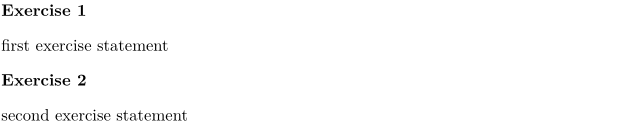

Waiting for more content.
Please refer to:
An enumeration is similar in principle to a description, but each text block is numbered, with \defineenumeration[Name] which allows the use of \startName \stopName. For example, for exercises:
-
\defineenumeration [Exercise] \startExercise first exercise statement \stopExercise \startExercise second exercise statement \stopExercise
- 